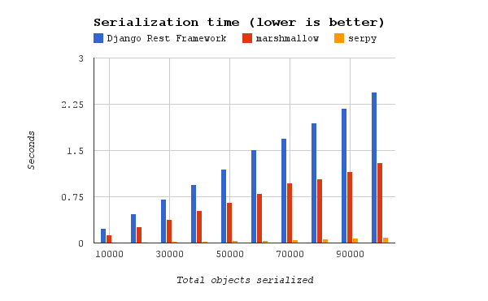
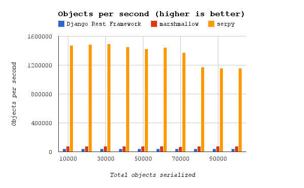
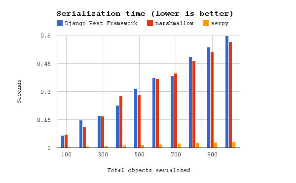
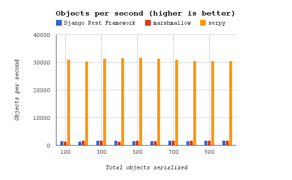

Performance Benchmarks
serpy (not drf-serpy its benchmarks will be added soon) was compared against two other popular serializer frameworks:
These graphs show the results. The benchmark scripts are found in the benchmarks directory in the drf_serpy GitHub repository. Run these benchmarks yourself with:
$ git clone https://github.com/sergenp/drf-serpy.git drf_serpy && cd drf_serpy
$ python benchmarks/bm_complex.py
$ python benchmarks/bm_simple.py
Results
Note these benchmarks are for serpy not for drf_serpy, new benchmarks are going to be uploaded soon.
These benchmarks were run on a Lenovo T530 with a 2-core 2.5 GHz i5 processor and 8G of memory.
Simple Benchmark
This benchmark serializes simple objects that have a single field.


Complex Benchmark
This benchmark serializes nested objects with multiple fields of different types.

